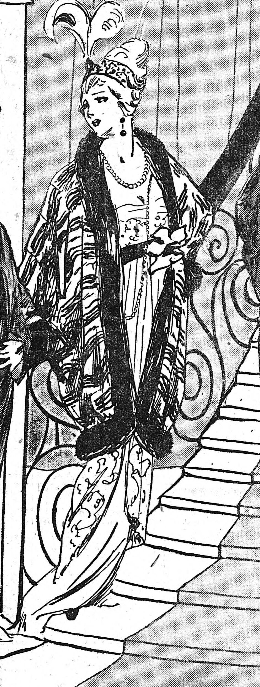

Je suis un peu interessé pour traduire des truc plus ou moins en lien avec My Little Pony (voir aussi une tentative de traduction), ce qui risque d’impliquer des zèbre. Autant zébre et zébreau semble être d’usage commun, il y a trois mots qui se concurrence pour « zèbre femelle » (peut être en plus de zèbre lui‑même)
Bon, aussi, j’suis curieux, et je souhaite pratiquer la recherche sur des termes.
Attention à l’accent, il change
A notez aussi que zèbre peut aussi être un terme référençant certaine forme de neurodiversité. Chacun de ces trois formes féminines semblent utilisé.
Conclusion : Dans le cadre d’une œuvre de fiction, en supposant que l’on souhaite féminiser ce terme, il faut mieux utiliser « zébrelle » ou « zébresse », au choix. Bien que j’ai l’impression que « zébresse » est moins utilisé de nos jour que « zébrelle ».
Suite à une demande par mail
Je suis vétérinaire, et j'avoue ne pas savoir quel terme serait le plus rigoureux ; nous utilisons couramment le terme de "zèbre femelle" et il me semble que notre service pédagogie utilise le terme "zébrelle". Je pense que le terme "zébresse" est également correct et que le terme "zébrette" concernerait plutôt de jeunes femelles zèbres.
| Mot | Wiktionnaire | Suffixe | Sens du suffixe (d’après le Wiktionnaire, uniquement le sens approprié) |
|---|---|---|---|
| Zébresse | (Mammalogie) Femelle du zèbre | ‑esse | forme des nom commun féminin |
| Zébrelle | (Mammalogie) (Rare) Jeune femelle zèbre. | ‑elle | Dimininutif féminin |
| Zébrette | (France) (Familier) Jeune zèbre femelle (aussi (France) (Familier) Fillette) | ‑ette | Diminitif féminin, souvent affectueux |
A noter que zèbre semble faire référence à quelque forme de divergence mentale. Il me semble qu’il est parfois utilisé comme synonyme de Haut Potentiel Intellectuel. Cet article affirme que zébrette fait particulièrement référence à ce sens.
Dans Gallica, zébresse semble faire usage d’une large utilisation, principalement dans le cadre d’hybridation avec d’autre équidé, mais aussi juste comme féminin de zèbre (par exemple, « lait de « zébresse » » (sic).
Zébrelle n’a pas de référence.
Zébrette à aussi des référence, mais ça semble pas vraiment directement lié au zèbre. Un article dit « La zébrette est un nylon rayé. » (à savoir si c’est spécifique au produit présenté ou plus générique).
Aussi « la zébrette Thérèse Cazauran » (dans le sens de jeune fille ?)
Aucun des résultat ne parle directement de zèbre.

Vêtement de zèbrette garni de skungs, tiré du journal Le Matin du 22 novembre 1913, via Gallica
Il n’est pas super explicite si certain étaient vraiment de vraie fourrure de zèbre.
Titre d’un livre érotique québecois. « La femme qui se trouve là, entre la fenêtre et le mur, est couverte de zébrures. On dira qu’elle est une femme zèbre. D’ailleurs, elle se tient à quatre pattes ». Ça tient plus de l’ordre du jeu de rôle sexuel dans la première nouvelle, où la narratrice joue une zèbresse. C’est un recueil de nouvelle, où les alusions aux zébrures sont récurrentes.
La nouvelle « Die Zebrin » dans « On va gagner » discute d’ailleurs de ce mot dans une courte section. La scène se déroule au niveau de Zurich, en Suisse, racontant la perception de quelqu’un qui lit le livre par des touristes.
— Ben, je sais pas. Die Zebrin, ce serait dans le genre de La femme zèbre.… J’ai pas vu de qui, le livre était relié. La zébresse... Ça existe comme mot en français, « Zébresse » ? Jamais entendu « Zebrin » en allemand, en tout cas. En tant que thécaire patenté, ça te dit quelque chose ?
— La zébresse, oui, je connais ça. Des nouvelles. Drôle de coïncidence. Mais ça n’a sûrement pas été traduit en allemand.
Sinon, c’est principalement de l’hybridation. Et d’autre référence à zébresse, dont l’usage en tant que femelle du zèbre ne semble pas être remis en question.
Dur à dire. J’ai pas vraiement accès à autre chose qu’un court extrait avec Google Livre, hélas. (sauf quand c’est chez Anna. Le cas d’aucun ici.)
En plus de l’apparence de tissue/peau/textile, il semble aussi utilisé comme nom d’animal de compagnie.
En étandant la recherche sur le catalogue de la BNF, on trouve trois résultat. Deux au moins semble ostensiblement traité de jeune zèbre femelle.
(en ignorant tout les nom d’entreprise et truc du genre)
J’ai quand même moins de résultat lors d’une recherche sur Brave. Bizarre. Comment expliquer l’absence de réfèrence dans Gallica pour zébrelle alors ?
Source de moindre importance
Uniquement des référence à zébresse
Un peu près tout les résultat font référence à La Zébresse
Un peu près tout dans le contexte de la neurodivergence